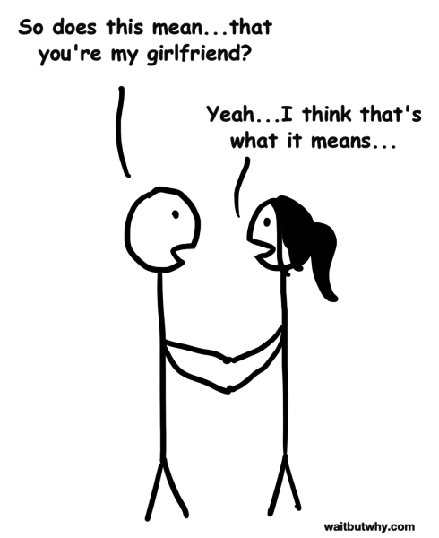
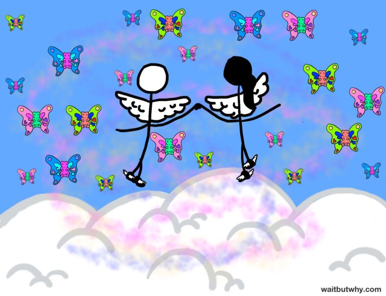
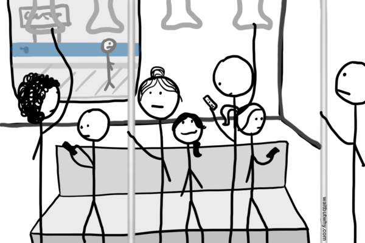
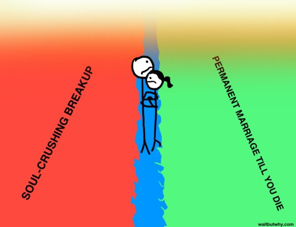
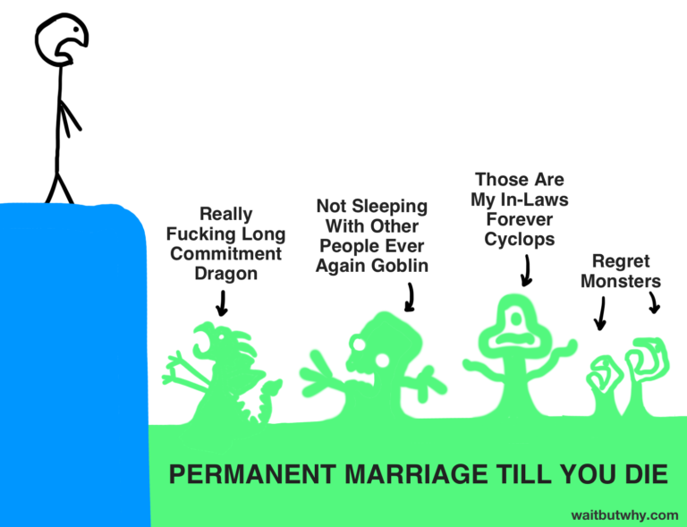

The Marriage Decision: Everything Forever or Nothing Ever Again
There’s not really any normal way to start a relationship. Some people go on a date, and then another date, and then another, and one day it’s just clear to both of them that they’re in a relationship. Some people start seeing each other, but they keep things black and white until a “So are we doing this?” conversation makes it official. Sometimes a platonic friendship forms first and tension builds under the surface until an unexpected kiss lights the friendship on fire.
But there’s usually some first time that this happens:

And suddenly, you’re here:

Your new relationship is with you all the time, even when you’re not together.

You’ve left the rest of shitty humanity behind, and it feels great. Then this happens:

And all the song lyrics make sense.
It goes on like this for a while, but as the months pass, you notice things changing. The unicorns turn into horses and then bikes and then one day, you’re not riding anything at all. The perfect person you found starts to say and do imperfect things. Some of those funny quirks you adored early on seem to be striking you as more annoying than funny. And it starts to dawn on you that you might be dating a fucking dick.
Sometimes things go further south, as butterflies and rainbows turn into frustration and disillusionment, and the relationship that used to lift you up seems to now be boxing you in.
All of the negative qualities you couldn’t see in the fog of love are suddenly right in your face, like a weight that’s dragging you down.
A lot of relationships end right about here.
But maybe, having seen the dark side of your partner, you step back and take a long look at both the good and bad together. You put away both the rose-colored glasses and the shit-colored glasses and see who you’re really dating: a three-dimensional, one-of-a-kind, beautiful, piece-of-shit human being.
Who’s the best.
And you decide you like what you’ve got.
And your lives go on together.
But just when things get simple, something else starts to happen:

Society, in most parts of the world, doesn’t like when a relationship lasts too long. To society, a relationship is simply a testing ground—an incubator that prepares you for The Decision. And if too many years go by in a relationship without The Decision being made, society decides that something must be wrong. To help right the wrong, society will begin to apply pressure on the couple, from all angles.
Some people are bigger than society. Most of us are not. For most of us, society’s rules are our rules, and as you and your person walk down your blue balance beam, you can feel the walking space melt away around you. It’s time to make The Decision.
Your relationship needs to be converted into Everything Forever or Nothing Ever Again. Soon.
The typical human isn’t really equipped to make The Decision. We evolved to live short lives, during which life-altering 60-year commitments weren’t a thing. We evolved in small communities without nearly as many available options. And most of us, when presented with The Decision, have relatively little relationship experience and an incomplete understanding of our own adult selves—selves that in many cases only recently started existing.
But society doesn’t care. So you decide.
Humans have come up with four main methods to make The Decision:
Method 1- Let the other person decide
The easiest way to handle The Decision is to just not really handle it. You take a passive approach, as if you’re on a raft, going down a river, and you have no control over where the current leads you—you’re in the hands of momentum and inertia. Once you hit your mid-20s, you just wait until you get into your next relationship and then marry whoever that person happens to be, whenever/if-ever that person decides it’s time, regardless of how right or wrong the relationship is for you.
Method 2- Let your primal forces battle it out
For people determined to more actively make The Decision, the next easiest way to go is to let your emotions and primal forces figure it out. Making The Decision provides a reminder that “you” is actually a collection of voices, each weighing in from different parts of evolutionary history. Each voice has its role in the homeostasis of our normal lives, but when it’s time for something as rare and important as The Decision, there’s suddenly a brawl in your head for influence—and no one brawls harder than your primal forces. Some of the major players:
LOVE
Deep down, most people are sympathetic characters. And when you’re in a relationship for enough time, you’ll usually end up loving the person—even if you don’t like them. You know their whole story, which makes you care about them and the fact that they rely on you makes you feel a tremendous loyalty to them. This is the kind of love you feel for your family and closest friends, and it can exist in full force even after the feeling of being “in love” has faded. And for many people, this deep emotional connection makes it basically inconceivable to ever break up with their partner. This is a beautiful way to make The Decision when you’re in a strong, healthy relationship, and a tragedy when you’re not
FEAR
Humans specialize in making critical life decisions based on fear, and when it comes to The Decision, there’s a lot to be afraid of. When a fearful person takes a look to the left side of the balance beam, they might see all kinds of things

The right side of the beam isn’t much better.
